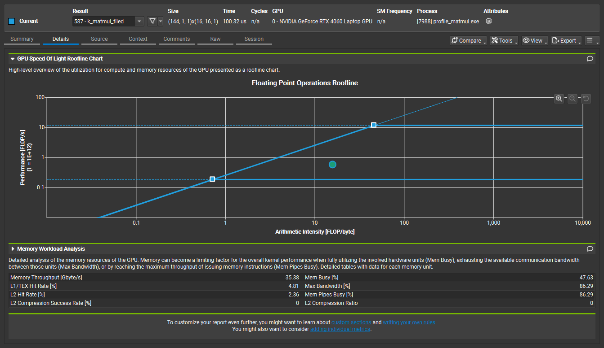

Where it lands
Same GPU, same weights, same session, matched precision, medians (never best-of-N). Decode is true M=1
in all three engines, so it is like-for-like. PyTorch prefill is measured on the transformer trunk only,
because HF's model(ids) also runs the LM head over all P positions and this engine does not.
| this engine (fp16) | llama.cpp F16, CUDA | PyTorch fp16 eager | |
|---|---|---|---|
| prefill @ P=128 | 27.548 ms | 2.732 ms | 9.441 ms |
| prefill @ P=512 | 107.140 ms | 7.422 ms | 9.395 ms |
| decode @ ctx=128 | 511.7 tok/s | 636.4 tok/s | 107.4 tok/s |
| decode @ ctx=512 | 503.8 tok/s | 604.0 tok/s | 107.9 tok/s |
| decode @ ctx=1023 | 448.6 tok/s | 586.3 tok/s | 106.4 tok/s |
Decode runs at 76–83% of llama.cpp and 4.2–4.8× faster than PyTorch eager. Prefill is 10–14× slower than llama.cpp.
The claim is that the numbers are true.
docs/decode.gif here and swap this block
for the <img> tag in the comment above it.
The ladder
Each stage changes one thing, re-passes the correctness gates, then is timed against the previous stage back-to-back on the same thermal state. A stage that doesn't earn its keep is reverted. Two axes, because prefill and decode are different regimes and blending them into a single "tok/s" is how benchmarks lie.
Sources: BENCHMARKS.md Table 2 and the per-stage blocks. Stage 0 is CPU (AMD Ryzen 7 7840H), included as the from-scratch baseline and not roofline-checked against GPU ceilings.
Table view (the same numbers, as text)
| Stage | What it adds | prefill @512 | decode | note |
|---|---|---|---|---|
| 0 | pure-C fp32 reference | 3347 ms | ~1.6 tok/s (no-KV, ctx 33→155) | correctness oracle; CPU |
| 1 | naive CUDA fp16 | 840.0 ms | 6.7 tok/s (no-KV, ctx 34→155) | GPU baseline |
| 2 | tiled shared-memory GEMM | 184.8 ms (4.55×) | 36.1 tok/s (no-KV, ctx 34→155) | that "decode" win is GEMM reuse, not decode |
| 3b | flash attention | 107.3 ms (1.72×) | 46.7 tok/s (no-KV, ctx 34→155) | attention 44.8% → 5.3% of prefill |
| 3a | fused LayerNorm + matmul | — | — | reverted: 2.9% slowdown, above noise |
| 4 | weight-only INT8 | 107.1 ms (1.00×) | 47.0 tok/s (no-KV, unmoved) | both gates pass via kill-test; zero speedup |
| 5 | KV cache + true M=1 GEMV | 107.1 ms | 511.7 tok/s @ctx=128 | 14.7–98.3× over no-KV recompute |
Three things that went wrong, and what they cost to find out
INT8 halved the bytes and bought exactly 1.00×
Weight-only INT8 halves the bytes of 48 matmuls. It bought 1.00× — at every shape, ranges overlapping. Rather than tune something, two predictions were written down, each of which would kill the other. If the M=1 tied-head GEMV were bandwidth-bound, halving its bytes gives ~2×. If it were compute-bound on work it discards, then M=1 and M=16 must cost the same — because the 16×16 tile computes sixteen output rows either way and masks fifteen at the write. Measured: 1.002× (rejected), and 1.4351 ms vs 1.4346 ms (confirmed). At M=1 the kernel runs at 860.6 GFLOP/s — 98.8% of its own M=512 throughput — while pulling 23% of achieved bandwidth. Fewer bytes cannot help a kernel that is not waiting on bytes. Nsight later put it in a counter: at the head shape the tiled GEMM is 2.00× slower than the naive one, off identical DRAM traffic.
The fusion that was correct, and 2.9% slower
Stage 3a fused LayerNorm into the matmul that consumes it, removing one [T,E] activation
round-trip to global memory. It is correct — gate (a) came back bit-identical to the unfused
kernel — and it is 2.9% slower: 0.971× at three separate shapes, with disjoint min/max ranges, so
it is not noise. The mechanism is in the consumer, not the fusion. The tiled GEMM re-stages each A tile
once per column tile — 144 times for the QKV shape, 192 for the FC. The fused kernel
re-normalizes on every staging. So it recomputes the LayerNorm 144× in order to save a single 0.79 MB
write worth about 3.4 µs, while the separate kernel normalizes each element exactly once. A fusion pays
only when the producer's output is consumed once, and a tiled GEMM consumes its input 144 times.
Reverted. The kernel survives in git history; the measurement that killed it is in the ledger.
The denominator I derived from a clock, and had to retract
For several stages the CUDA-core compute ceiling was derived from the clock — 24 SM × 128 lanes × 2 × 2.61 GHz = 16.0 TFLOP/s — and then used as the denominator for "% of roofline". The project's own rule says microbench, don't assume. Measured, the achievable non-tensor GEMM is 10.10 TFLOP/s: the assumption was optimistic by 1.55×, and the ridge point it implied (≈69) was simply wrong. The real one is 43.3. Labelling a number "derived, not measured" does not license using it as a measurement.
Then the GPU handed over the proof, by accident. A pre-release re-run came back 36% slow: the card had sat at 1920 MHz all session instead of 2610. Every compute peak scaled by the clock ratio 0.7356. Neither memory peak moved at all. Prefill, multiplied by that single ratio, lands back on the ledger at every rung of the ladder, within 0.21%. The true M=1 decode step barely notices. And prefill efficiency turns out to be clock-invariant — 8.45% at 1920 MHz, 8.48% at 2610 — which is what a denominator does, and what a guess does not.
The gap, decomposed
llama.cpp is faster. The deliverable is not the ratio, it is the characterised ratio — so here is where all of it goes. At P=512 the 14.44× prefill gap factors into two measured terms:
14.44x = 3.12x tensor cores (WMMA)
31.51 TFLOP/s measured tensor-GEMM ceiling
/ 10.10 TFLOP/s measured achievable CUDA-core GEMM ceiling
x 4.63x GEMM maturity
llama.cpp reaches 39.3% of its ceiling; this engine reaches 8.5% of its own
Be precise about what each term is. Only the first is an independent measurement: it is the ratio
of two separately microbenchmarked peaks (ROOFLINE.md
§6 and §6b). It is a ceiling this engine cannot reach, because it uses no tensor cores — a scope
decision, not an oversight. The second is the residual, gap ÷ 3.12×, which happens to equal the
ratio of how much of its own ceiling each engine reaches. So 3.12 × 4.63 = 14.44 is an
identity, not a prediction that came true. What the partition buys is the split itself: how much of the
gap is a ceiling that was never in scope, versus how much is kernel quality inside the ceiling that was.
The second term is the distance between a textbook 16×16 shared-memory tile and a register-tiled,
double-buffered, vectorized GEMM.
Fusion is not part of the prefill answer, and it is worth saying because it is the usual guess. Attention is 5.3% of prefill after stage 3b, and the ~123 kernel launches in a prefill forward cost well under 1% of a 107 ms forward — bounded from above by the per-op profile's sum-of-parts landing within 0.7% of the uninstrumented forward. Nothing else is large enough to matter.
Decode: 1.24× at ctx=128, 1.31× at ctx=1023
The decode gap is small and it is not bandwidth. Measured on the same basis — weight bytes per token — this engine achieves 127.4 GB/s (54.6% of copy bandwidth) and llama.cpp achieves 159.6 GB/s (68.4%). Both are far from the bus. The roofline said decode was memory-bound; at this model size, on this GPU, what it actually waits on is kernel launches. At ctx=1023 the gap splits:
| component of the ctx=1023 decode gap | cost | share | why |
|---|---|---|---|
| fixed per-step overhead | 0.3831 ms | 73% | our step is 135 kernel launches, several of them 1-block kernels (an M=1 LayerNorm occupies 1 of 24 SMs); llama.cpp captures the whole step in a CUDA graph |
| attention ctx-scaling | 0.1406 ms | 27% | ours grows +0.2748 ms from ctx 128→1023; llama.cpp only +0.1342 ms — our 3-pass k_attn_decode vs their flash-decode kernel |
The fixed term is not inferred from the split — it is the whole gap at ctx=128, where attention is negligible, and it is still 0.3831 ms at ctx=1023. That is what makes the 73/27 decomposition a measurement rather than an allocation. CUDA-graph capture is the named lever, and it is deliberately not built — which is precisely why the gap can be attributed to it instead of hand-waved.
One baseline number is worth reading twice: PyTorch eager's trunk prefill is 9.441 ms at P=128 and 9.395 ms at P=512 — identical, for four times the work. It is host-dispatch-bound at this model size. That is why beating it on decode by 4.2–4.8× is table stakes, and why llama.cpp is the only baseline here that says anything at all.
Profiles
Nsight Compute counters (2024.3.0; RTX 4060 Laptop, CC 8.9). These corroborate the mechanism claims
that ptxas -v, the M-sweep, and achieved GFLOP/s vs GB/s had already established — they do not
change a verdict. Raw counter transcriptions:
docs/ncu/raw_counters.txt,
text exports in docs/ncu/.
Global-load coalescing at M=1 — naive vs tiled GEMM
k_matmul vs k_matmul_tiled, M=1, N=2304, K=768. Naive's 2.002 bytes per
32-byte sector is exactly one fp16 per sector: the weight stride (1536 B) exceeds a sector, so every
lane lands in one of its own.
k_matmul naive | k_matmul_tiled | ideal | |
|---|---|---|---|
| global-load sectors / request | 16.491 | 1.887 | 2.0 |
| global-load efficiency | 6.26% | 51.55% | 100% |
| bytes per 32 B sector | 2.002 B | 16.495 B | 32 B |
| L1/TEX hit rate | 93.89% | 4.81% | — |
| DRAM bytes read | 3.552 MB | 3.549 MB | 3.54 MB |
Why 8.7× fewer sectors is worth only the 1.18× measured at M=1: naive's L1 hit rate is 93.89%, so both kernels pull the same DRAM traffic. On an L2-resident weight at M=1 this is an L1-transaction defect, not a DRAM defect — the win only grows to ~7× once reuse (M≫1) enters.
Head GEMV is bandwidth-saturated
k_gemv_fp16, the tied output head (N=50257, K=768). The 243 GB/s previously inferred from
achieved bandwidth is now read straight off the DRAM counter — and it was never L2 inflation: 77.20 MB
exceeds the 32 MiB L2.
| Duration | 317.28 µs |
dram__bytes_read.sum | 77.20 MB = 50257×768×2: W read exactly once |
| DRAM read throughput | 243.3 GB/s (243.2 inferred — 0.04% apart) |
| DRAM throughput | 96.27% of peak |
| Compute (SM) throughput | 29.57% of peak |
| global-load efficiency | 100.00% |
Halving the head's bytes would pay ~2×. It is kept fp16 anyway: quantizing it alone cost KL 0.257 and Δppl +0.549, failing both gates. INT8 decode's 1.02–1.16× ceiling is therefore a quality constraint sitting on a bandwidth-ready kernel — not a bandwidth limit.

ncu_head_gemv_sol.ncu-rep via the CLI, which cannot itself emit images.
Reproducing it
Build the engine (Windows, MSVC + CUDA 12.6; the MinGW gcc on PATH is 32-bit and
cannot hold the 498 MB fp32 model). Three scripts, each callable from the repo root; together they build
every binary named below:
build_cuda.bat :: Stages 1-5: correctness_cuda, kv_gate, bench_decode, profile_decode,
:: profile_forward, ab_forward, eval_ppl_cuda, microbench
build.bat :: Stage 0: the pure-C fp32 reference (bench\correctness.exe)
build_profile.bat :: the isolated matmul harness the ncu section drives (bench\profile_matmul.exe)Run the gates (correctness before speed, every time):
set GPT2_BACKEND=flash
bench\correctness_cuda.exe all :: gates (a) (b) (c) vs the HF fp16 oracle
bench\kv_gate.exe :: Stage-5 KV-cache decode gates + cached-vs-recompute equivalence
GPT2_BACKEND selects the kernel path: naive | tiled |
flash | int8 | gemv. All six shipped paths (those five plus the
pure-C fp32 reference) pass the gates.
Benchmark:
bench\bench_decode.exe 50 :: true M=1 decode; KV vs no-KV; naive/tiled/gemv/int8 (50 = ITERS, see below)
bench\bench_decode.exe 256 :: the same, at BENCH_PROTOCOL §6's N >= 256 median samples
bench\profile_decode.exe 512 :: per-op attribution + achieved bandwidth per GEMV
bench\microbench.exe cudacore :: the measured CUDA-core ceiling behind every "% of roofline"
bench\profile_matmul.exe bw 50257 768 :: the M-sweep: why tiling loses at M=1 on the tied head
bench_decode's argument is iters, not decode steps — worth stating,
because reading 50 as "50 tokens" would put it under
BENCH_PROTOCOL.md §6's
N ≥ 256. iters is the number of timed A/B samples, and each sample times a batch of 4–16
decode steps and divides — so the reported figure is still ms per token, and 50
executes 800 timed decode steps. It is the ledger value: the iters=50 that produced
stage 5's recorded block. The batching exists because a ~2 ms step spanning 135 launches is sensitive to
host jitter; it amortises jitter and does not change what is measured.
Reproducing the llama.cpp baseline — three traps, all of which cost me time
-
Mainline's HF→GGUF converter is broken for GPT-2.
conversion/gpt2.pyintends to drop the legacy causal-mask buffers, but hands them tomap_tensor_name()instead, raisingCan not map tensor 'h.0.attn.bias'. The one-line fix is attools/llamacpp_gpt2_convert.patch. It is a genuine upstream bug, not a local convenience. -
Use
llama-completion, notllama-cli.llama-cliis now a chat front-end and injects a ChatML template; GPT-2 tokenizes<|im_start|>literally and emits garbage. That is a front-end artifact, not a broken model —llama-completiongives "Paris … Berlin … Washington … London". -
llama-benchprints mean ± stddev, not median. Use-o jsonand recompute the median fromsamples_ns. Measure decode at a stated context with-d/--n-depthand a short-n, or the context drifts across the generation.
python tools\bench_pytorch.py :: the PyTorch eager baseline (TF32 off, sync-bracketed)Scope
Forward inference, batch=1, one model, one GPU, the ladder above. Not a framework, not a serving system, not multi-GPU, not a llama.cpp clone. Tensor cores (WMMA), kernel fusion beyond Stage 3, and CUDA graph capture are named in the roofline as the levers that would close the remaining gap — and are deliberately not built, which is precisely why the gap can be attributed to them rather than hand-waved.
INT4 is not attempted, and the reason is measured rather than declined. Its bound is pre-registered and locked (Δppl ≤ +1.0), but the shipped INT8 build clears the KL gate with a margin of only 1.34× — max KL 1.495e-2 against the 0.02 bound, where fp16 had 10× — and the 48 quantized block matmuls consume nearly all of that budget on their own. INT4 has essentially no headroom on this model without further mixed precision. The bound stays locked regardless: an INT4 attempt that breaches it is an honest negative result, not an invitation to re-tune the bound afterwards — exactly as INT8's breached +0.3 was kept.
BENCHMARKS.md also records an INT8-vs-llama.cpp-Q8_0 decode comparison, deliberately not headlined: the schemes don't match. Ours is mixed precision — 48 block matmuls in INT8 with the tied head held in fp16 because the quality gate demands it — while Q8_0 is uniform int8 over every weight. Different byte counts, different quality points, no Δppl measured for Q8_0. Context, not a result.
Hardware: RTX 4060 Laptop (AD107, sm_89, 24 SM, 8 GB GDDR6, 105 W). Measured: 233.4 GB/s copy bandwidth, 248.9 GB/s read, 31.51 TFLOP/s tensor GEMM, 10.10 TFLOP/s achievable CUDA-core GEMM.